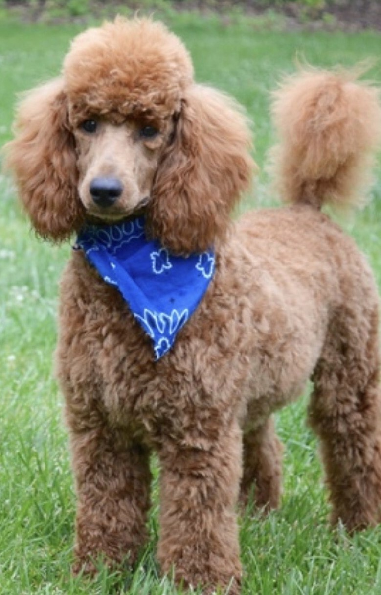
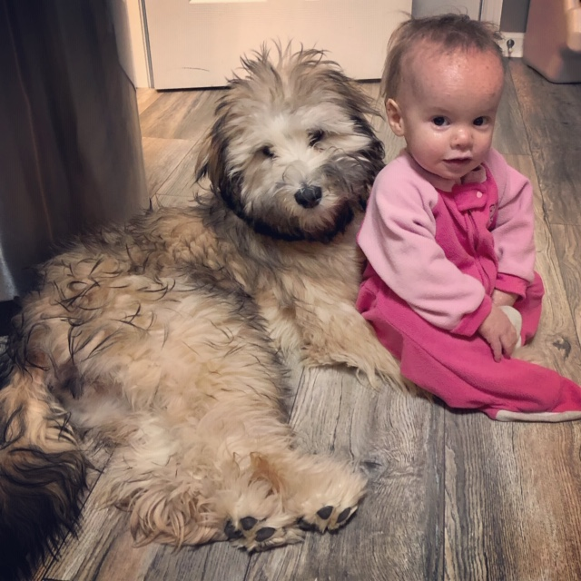

Meet The Parents
Cash

Cash is a mid-size Poodle.
Piper

Piper is a full bread Wheaten Terrier.
Moses
Moses is a mid-size Moyen Poodle.
Piper's Pups isn't just a solo act, it involves our whole family. Each of us has a specific role in making sure our puppies are ready to become the next member of your family. From the oldest, Kenny, to his younger sister, Chloe, to Clarke and the baby of the family, Claire. Each child spends time with the puppies ensuring they have plenty of time with people of all ages.

Cash is a mid-size Poodle.
Piper is a full bread Wheaten Terrier.
Moses is a mid-size Moyen Poodle.
We got Piper in 2017 to add to our family of 5 at the time. Piper made a wonderful impact as she taught our kids responsibility and showed them unconditional love as only a dog can. Fast forward to 2018, the Schaaap Family has now grown to a total of 8 with 4 skids and 2 dogs. Piper had her first litter in the Summer of 2018. She had 6 adorable Whoodle puppies. We could not help but keep one of her first puppies, Prim.
Having 4 kids and 2 puppies, there is always activity going on in the Schaap home. Each puppy is shown much love and attention from all of our kids. Towards the end of their 8 week stay, we begin to let them play outside. This allows the puppies to have a great balance from the beginning which in turn helps them to have the wonderful temperament that Whoodles are known to have.
We make sure each of our puppies are given special attention as proper socialization is extremely important to a dogs temperament. Additionally, each of our puppies health is very important to us. We take the puppies to the vet regularly to be sure each of them is developing properly and healthy. Each puppy will include their first round of shots, a bag of food, a toy and a blanket with the scent of their mother.